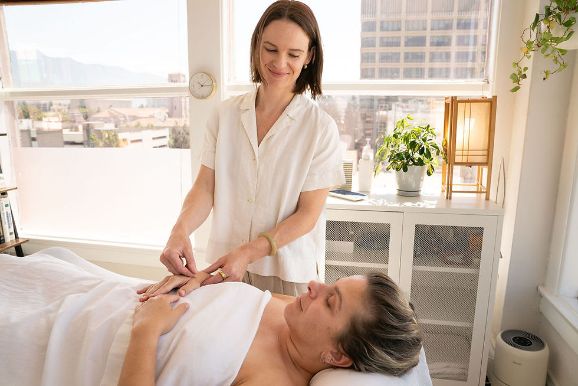

O ser humano por inteiro
Reunimos terapias integrativas e complementares em um cuidado que acolhe corpo, mente, emoções e energia — respeitando a singularidade de cada pessoa.
.png)
Um encontro entre cuidado, consciência e práticas integrativas para apoiar você em uma jornada de equilíbrio e transformação.
Reunimos terapias integrativas e complementares em um cuidado que acolhe corpo, mente, emoções e energia — respeitando a singularidade de cada pessoa.
Práticas como Reiki e o conhecimento dos chakras convidam à escuta interior, ao autoconhecimento e à expansão da consciência no dia a dia.
Criamos condições para que você reconheça seus próprios recursos de autocuidado e participe ativamente do seu caminho de bem-estar.
O Instituto Ajna nasceu para cuidar, ensinar e ampliar possibilidades de equilíbrio para a saúde física e mental.
Fundado em 2022, o Instituto Ajna Terapias Integrativas e Complementares nasceu dedicado ao cuidado, à recuperação do equilíbrio e ao bem-estar físico e mental.
A Medicina Tradicional Chinesa fundamenta nossa anamnese e o diagnóstico energético, unindo conhecimentos ancestrais a técnicas contemporâneas.
Acupuntura, Reiki, auriculoterapia, ventosaterapia, shiatsu, reflexologia e massagens terapêuticas compõem um cuidado atento à singularidade de cada pessoa.
Por meio de cursos de formação, o Instituto ajuda pacientes e alunos a percorrer caminhos de saúde, autoconhecimento e harmonia integral.
Selecione uma prática e conheça como ela participa da experiência de cuidado no Instituto Ajna.

Utiliza agulhas muito finas em pontos específicos do corpo, definidos após uma escuta cuidadosa e uma avaliação médica individual.
Tire dúvidas, acompanhe nossos conteúdos ou dê o primeiro passo para agendar o seu cuidado.
@institutoajnaterapias
Instituto Ajna Terapias Integrativas e Complementares